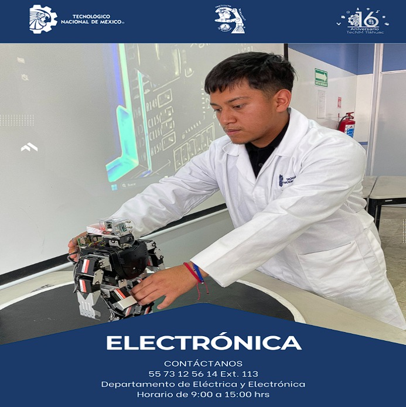

Podemos darle un vistazo al indice del Tecnm Tlahuac 🧙♂️
"LA ESENCIA DE LA GRANDEZA RADICA EN LAS RAÍCES"
"

Podemos darle un vistazo al objetivo general del Tecnm Tlahuac 🧙♂️
"LA ESENCIA DE LA GRANDEZA RADICA EN LAS RAÍCES"
OBJETIVO GENERAL
Formar profesionistas con competencias profesionales para diseñar, modelar, implementar, operar, integrar, mantener, instalar,
administrar, innovar y transferir tecnología electrónica existente y emergente en proyectos interdisciplinarios, a nivel nacional e
internacional, para resolver problemas y atender las necesidades de su entorno con ética, actitud emprendedora, creativa, analítica
y comprometidos con el desarrollo sustentable.
Podemos darle a el perfil de egreso del Tecnm Tlahuac 🤖
PERFIL DE EGRESO1.- Diseñar, analizar y construir equipos y/o sistemas electrónicos para la solución de problemas en el
entorno profesional, aplicando normas técnicas y estándares nacionales e internacionales.
2.- Crear, innovar y transferir tecnología aplicando métodos y procedimientos en proyectos de ingeniería
electrónica, tomando en cuenta el desarrollo sustentable del entorno.
3.- Promover y participar en programas de mejora continua aplicando normas de calidad en toda empresa.
4.- Planear, organizar, dirigir y controlar actividades de instalación, actualización, operación y mantenimiento
de equipos y/o sistemas electrónicos.
5.- Aplicar las nuevas Tecnologías de la información y de la comunicación, para la adquisición y procesamiento de datos.
6.- Desarrollar y administrar proyectos de investigación y/o desarrollo tecnológico.
7.- Ejercer la profesión de manera responsable, ética y dentro del marco legal.
8.- Asumir las implicaciones de su desempeño profesional en el entorno político, social, económico y cultural.
9.- Comunicarse con efectividad en forma oral y escrita en el ámbito profesional tanto en su idioma como en un idioma extranjero.
10.- Ejercer actitudes emprendedoras, de liderazgo y desarrollar habilidades para la toma de decisiones en su ámbito profesional.
11.- Comprometer su formación integral permanente y de actualización profesional continua, de manera autónoma.
12.- Dirigir y participar en equipos de trabajo interdisciplinario y multidisciplinario en contextos nacionales e internacionales.
13.- Capacitar y actualizar en las diversas áreas de aplicación de ingeniería electrónica.
14.- Simular modelos que permitan predecir el comportamiento de sistemas electrónicos empleando plataformas computacionales.
15.- Seleccionar y operar equipo de medición y prueba.
16.- Utilizar lenguaje de descripción de hardware y programación de microcontroladores en el diseño de sistemas digitales para su aplicación en la ç
resolución de problemas.
17.- Resolver problemas en el sector productivo mediante la automatización, instrumentación y control.
18.- Desarrollar aplicaciones en un lenguaje de programación de alto nivel para la solución de problemas relacionados con las diferentes
disciplinas en el área.
19.- Diseñar e implementar interfaces gráficas de usuario para facilitar la interacción entre el ser humano, los equipos
y sistemas electrónicos.
Podemos darle un vistazo a la reticula del Tecnm Tlahuac ❤️